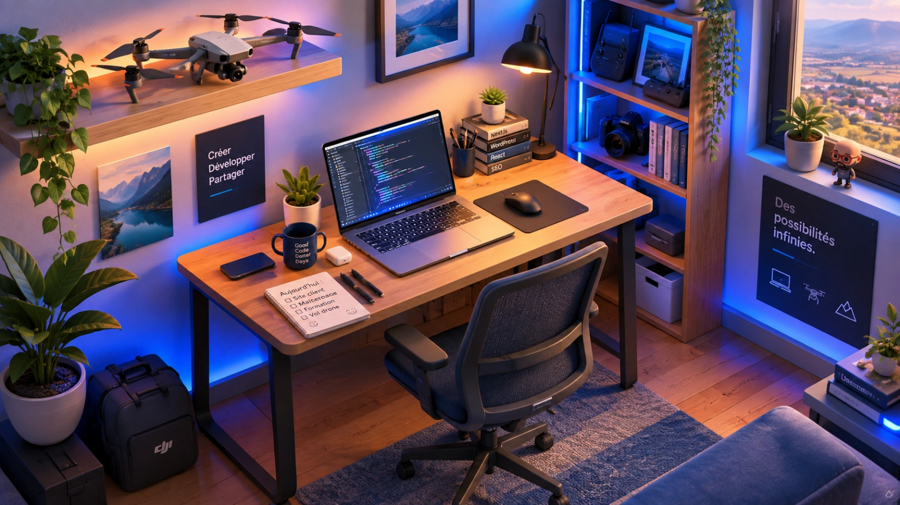
Pôle Web : Création de Sites Internet & E-Commerce dans l'Ain 20 Réalisations ›
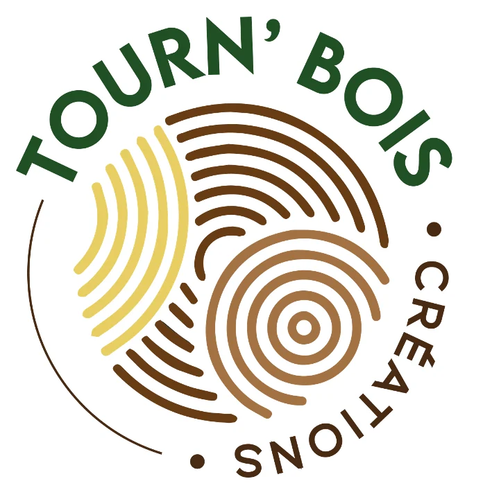
Tourn'bois Créations
E-Commerce & Métier d'ArtConception et digitalisation de la boutique en ligne de Tourn'bois Créations, tournerie réputée dans le travail du bois noble.
Mon objectif était de valoriser un savoir-faire d'exception tout en simplifiant le tunnel d'achat pour les commandes sur-mesure des particuliers et décorateurs.
- Catalogue optimisé : J'ai structuré des fiches produits sur-mesure avec galeries photo haute définition et sélection d'essences de bois.
- Tunnel d'achat sécurisé : J'ai intégré une solution de paiement bancaire rapide, rassurante et fluide sur mobile.
- SEO local & artisanal : J'ai positionné le site sur les requêtes d'artisanat d'art et d'ameublement sur-mesure.
MCL Gestion
Conseil & GestionRéalisation du site vitrine de MCL Gestion, cabinet d'accompagnement financier et de direction administrative pour dirigeants de PME avec une ergonomie sobre et rassurante qui clarifie des expertises de pilotage stratégique et incite à la prise de contact directe.
- Architecture claire : J'ai structuré la présentation des missions par pôle d'intervention (trésorerie, tableaux de bord).
- Prise de contact rapide : J'ai mis en place un formulaire direct pour planifier un premier diagnostic avec le dirigeant.
- Vitesse de chargement : J'ai optimisé les Core Web Vitals pour une fluidité absolue sur smartphone.
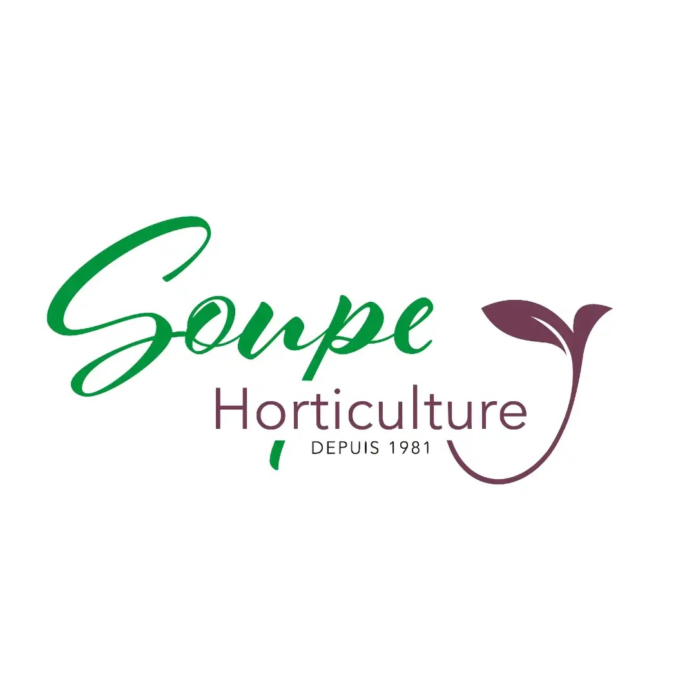
Soupe Horticulture
PépiniéristeConception du site vitrine et réalisations de prises de vues aériennes par drone pour Soupe Horticulture, exploitation horticole familiale incontournable dans le département de l'Ain.
J'ai associé un web design aéré à des plans drone 4K pour immerger les visiteurs au cœur des serres de production.
- Captation drone 4K : J'ai piloté et filmé les serres pour donner une dimension spectaculaire à l'exploitation.
- Présentation des magasins et sites de production : J'ai mis en évidence les points de vente ainsi que les sites de production afin de rassurer les clients sur la qualité des produits.
- Référencement local : J'ai optimisé le référencement naturel autour de Bourg-en-Bresse et des communes voisines.
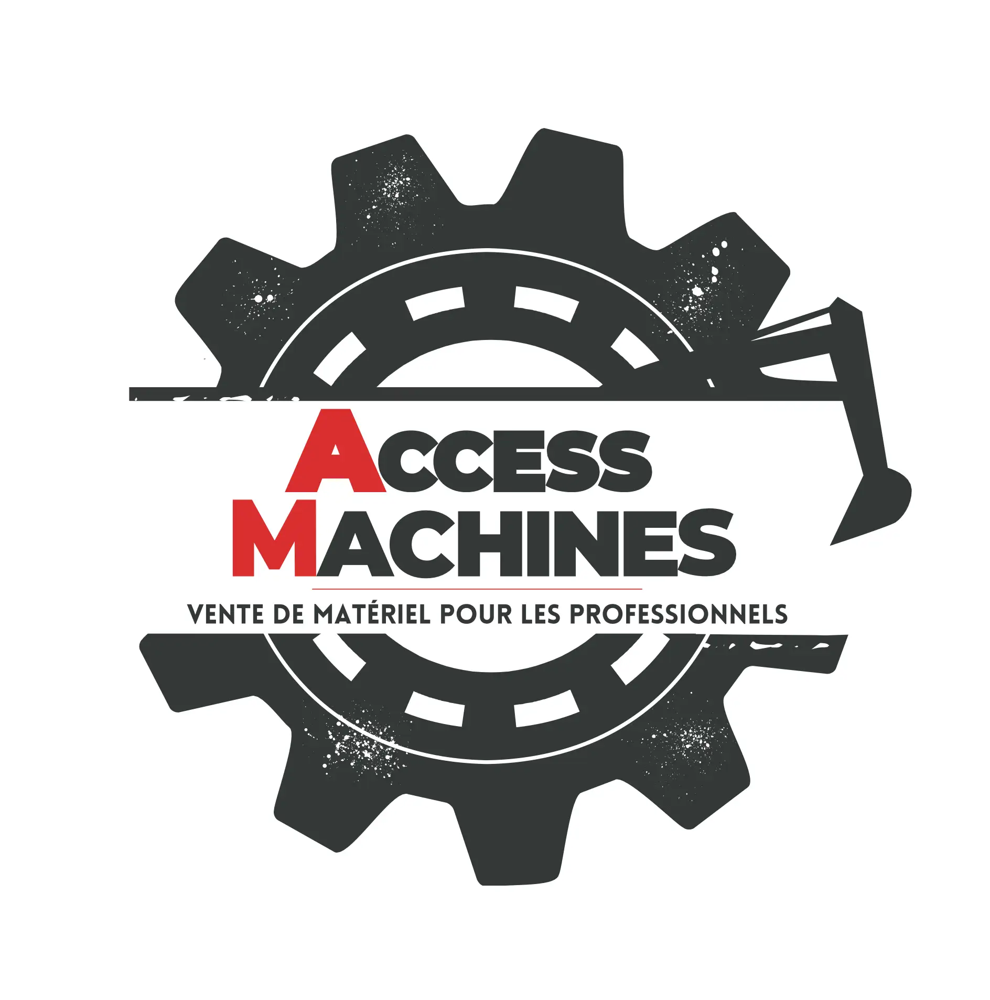
Access Machines
Industrie & BTPDéveloppement du site vitrine sur-mesures pour Access Machines, distributeur d'équipements de chantier pour les professionnels du BTP.
L'interface permet aux professionnels de trouver rapidement un matériel et de demander un chiffrage en ligne.
- Fiches techniques détaillées : J'ai structuré les caractéristiques clés (tonnage, puissance) avec téléchargement des fiches PDF.
- Demande de devis directe : J'ai mis en place un formulaire de contact ciblé facilitant les demandes de chiffrage.
- Optimisation ergonomique : J'ai conçu une interface claire et contrastée, adaptée à la consultation sur mobile.
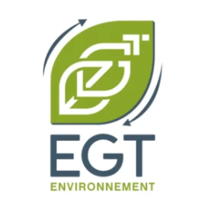
EGT Environnement
Gestion des déchetsCréation du site vitrine et réalisation de prises de vues aériennes par drone pour EGT Environnement, spécialiste du tri, du recyclage des déchets de chantier et de la location de bennes dans l'Ain.
Le site présente l'ensemble des filières de valorisation et facilite la réservation de bennes pour les entreprises et particuliers.
- Présentation des prestations : J'ai structuré l'offre de façon claire et intuitive pour faciliter la navigation des particuliers comme des professionnels.
- Captation vidéo par drone 4K : J'ai réalisé les prises de vues aériennes de la plateforme de tri pour illustrer les infrastructures.
- Référencement local dans l'Ain : J'ai positionné le site sur les recherches liées au recyclage et à la location de bennes.
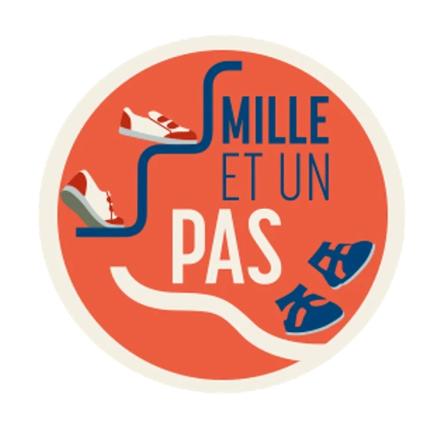
Mille et un pas
Magasin de chaussuresConception du site vitrine de Mille et un pas, boutique indépendante de chaussures de confort, de ville et de randonnée à Pontarlier.
L'objectif est d'offrir une vitrine en ligne claire afin de renseigner les clients locaux et de générer du trafic en magasin.
- Showroom de collections : J'ai mis en avant les modèles saisonniers homme, femme et enfant avec un rendu visuel soigné.
- Informations pratiques & SEO local : J'ai intégré les horaires, la localisation Google Maps et les avis clients vérifiés.
- Référencement local dans le Doubs : J'ai optimisé le site pour les recherches de chaussures dans le département du Doubs et les communes voisines (Suisse voisine).
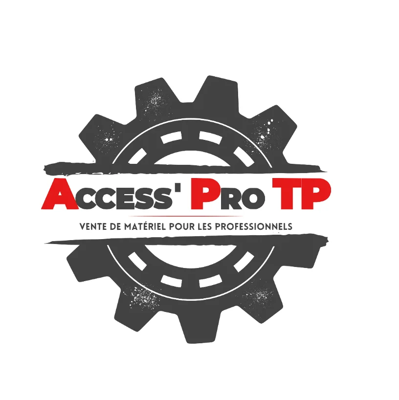
AccessPro'TP
Travaux publicsCréation du site vitrine technique d'AccessPro'TP, distributeur de godets, attaches rapides et équipements pour engins de travaux publics.
Le site apporte des renseignements précis sur les produits et facilite la prise de contact pour les demandes de devis.
- Mise en avant des gammes : J'ai répertorié les équipements par marques et constructeurs partenaires.
- Formulaire de demande de devis : J'ai développé un formulaire dédié permettant de transmettre rapidement les demandes clients.
- Optimisation technique : J'ai allégé le code pour garantir une consultation fluide depuis tous les types de supports, notamment les smartphones.
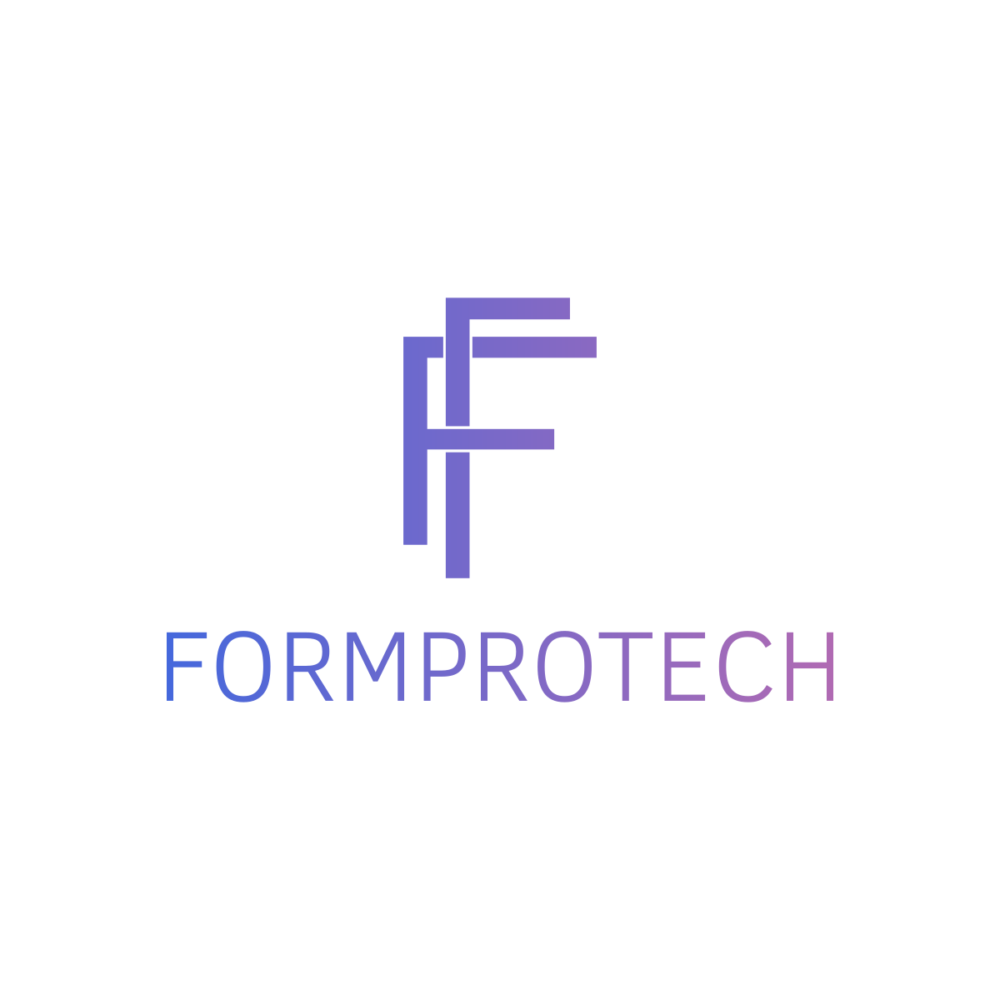
Formprotech
Formation ProfessionnelleDéveloppement du site vitrine de Formprotech, organisme de formation dans l'Ain.
Le site présente l'ensemble de l'offre certifiée et oriente efficacement les responsables RH et dirigeants d'entreprise.
- Catalogue des formations : J'ai structuré les programmes pédagogiques avec objectifs, prérequis et modalités OPCO.
- Conformité Qualiopi : J'ai intégré les mentions obligatoires et valorisé les indicateurs de satisfaction.
- Demandes d'inscription : J'ai déployé un tunnel de contact fluide pour accélérer le traitement des demandes de devis.
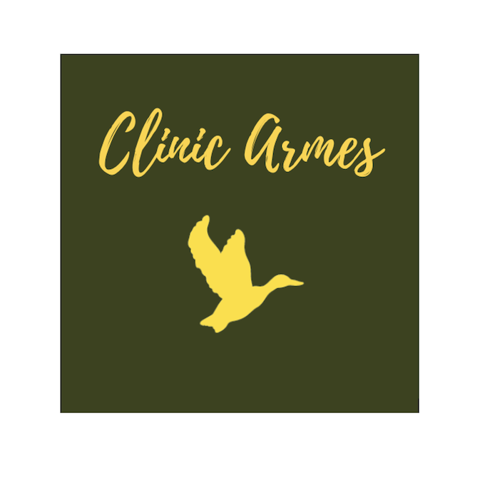
Clinic Armes
ArmurerieCréation du site vitrine spécialisé de Clinic Armes, atelier d'armurerie artisanale et vente d'équipements à Villars-les-Dombes dans l'Ain.
La plateforme valorise les prestations d'atelier et respecte rigoureusement le cadre réglementaire du secteur.
- Prestations d'atelier : J'ai détaillé les opérations techniques de mise en conformité, réglage optique et réparation.
- Catalogue de prestations : J'ai organisé le site de façon claire pour que les clients puissent identifier rapidement les services proposés.
- Référencement local : J'ai optimisé le positionnement sur la Dombes, l'Ain et les départements voisins.
Les Meubles Mailland
Mobilier haut de gammeRefonte du site internet et réalisation de vidéos promotionnelles pour Les Meubles Mailland, fabricants ébénistes et créateurs d'agencements intérieurs sur-mesure dans l'Ain.
Le support met en valeur le travail du bois noble et propose une navigation axée sur l'inspiration visuelle.
- Vidéos en atelier & drone : J'ai réalisé les prises de vues pour illustrer les étapes de fabrication artisanale et le showroom.
- Galerie de réalisations : J'ai structuré les projets par univers (cuisines, dressings, séjours et mobilier sur-mesure).
- Maintenance technique : J'assure le suivi régulier et les mises à jour de sécurité du site.
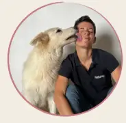
Nathalie Robez Masson
Boutique ArtisanaleConception de la boutique e-commerce de Nathalie Robez-Masson, conseillère en nutrition animale naturelle dans l'Ain et le Jura.
La boutique en ligne permet de commander facilement des aliments sains et de solliciter des conseils personnalisés.
- Boutique en ligne : J'ai configuré le catalogue produits avec paiement sécurisé et options de livraison ou retrait.
- Formulaire de bilan nutritionnel : J'ai développé un questionnaire guidant le client vers la ration adaptée à son animal.
- Ergonomie & clarté : J'ai mis en place une présentation simple et accessible pour fidéliser la clientèle locale.
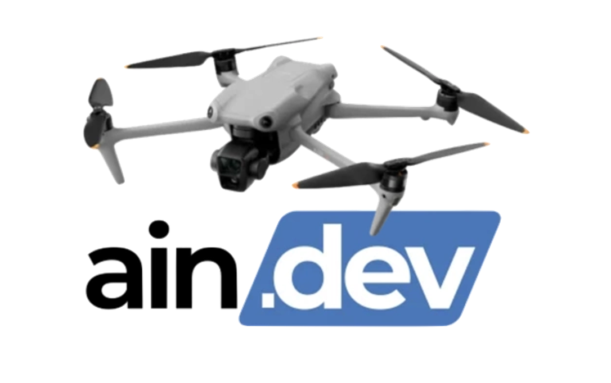
Aindev Drone
Captation AérienneCréation de la plateforme de présentation dédiée à l'activité de télépilote de drone professionnel, intervenant dans l'Ain et en Auvergne-Rhône-Alpes.
Le site détaille les prestations de prises de vues 4K pour les entreprises, le secteur immobilier et les collectivités.
- Intégration du showreel 4K : J'ai intégré les vidéos haute définition en veillant à la rapidité de chargement des pages.
- Réglementation & sécurité : J'ai documenté les attestations officielles, l'assurance RC Pro et les autorisations de vol en zone peuplée.
- Valorisation de l'offre : J'ai structuré les cas d'usage montrant l'apport de la vidéo aérienne sur un site web.
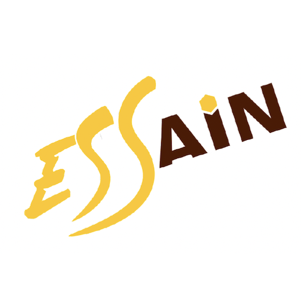
ESS'Ain
Coopérative d'entrepreneursDéveloppement du portail collaboratif de la Coopérative d'Activité et d'Emploi (CAE) ESS'Ain, réseau d'entrepreneurs de l'économie sociale et solidaire dans l'Ain.
L'outil permet de mettre en lumière les activités des entrepreneurs salariés et d'informer sur le statut coopératif.
- Annuaire des coopérateurs : J'ai développé un moteur de recherche filtrable par métier, compétence et secteur géographique.
- Agenda des ateliers : J'ai intégré un module de gestion des réunions d'information et des sessions de formation.
- Éco-conception web : J'ai optimisé les ressources pour respecter les exigences de sobriété numérique.
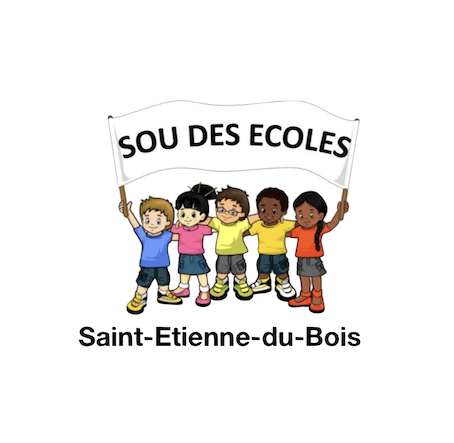
Sou des Écoles
Vie AssociativeCréation bénévole du site associatif du Sou des Écoles de Saint-Étienne-du-Bois, structure finançant les projets pédagogiques et sorties scolaires de l'école publique de Saint Etienne du bois.
La plateforme informe les familles sur les actions menées, facilite les inscriptions bénévoles et relaie les événements.
- Calendrier des manifestations : J'ai mis en place l'affichage des événements associatifs (marchés, kermesses, opérations solidaires).
- Appel aux bénévoles : J'ai simplifié le formulaire d'inscription pour l'aide aux animations scolaires.
- Communication financière : J'ai structuré une section transparente expliquant l'affectation directe des fonds récoltés.
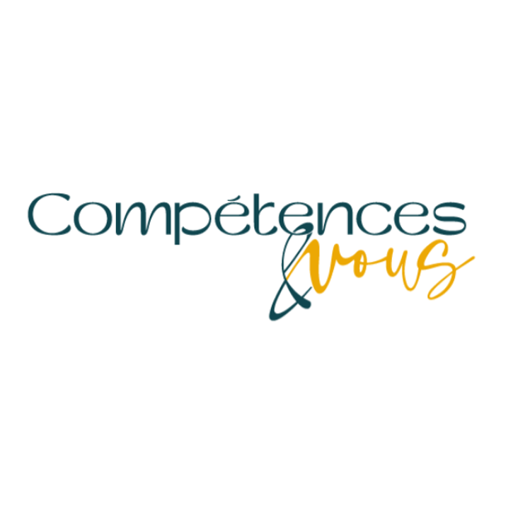
Compétences & Vous
Formation & BilanAudit technique, sécurisation et optimisation SEO pour Compétences & Vous, cabinet certifié en bilans de compétences et transition professionnelle.
L'intervention a permis d'assainir la plateforme et de clarifier le parcours d'inscription pour les futurs bénéficiaires de bilans de compétences.
- Maintenance & sécurité : J'ai corrigé les vulnérabilités techniques, supprimé les extensions inutiles et accéléré le serveur.
- Optimisation du référencement naturel : J'ai restructuré les balises sémantiques autour de la reconversion professionnelle.
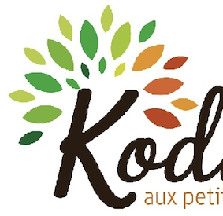
Kodama
PaysagismeDéveloppement d'une application web sur-mesure pour Kodama, entreprise spécialisée dans le soin aux arbres, l'élagage technique et le paysagisme dans l'Ain.
L'outil permet aux équipes de réaliser des relevés d'arbres et diagnostics sanitaires sur tablette directement sur le terrain.
- Cartographie interactive : J'ai intégré Leaflet pour localiser précisément chaque sujet arboré et suivre son historique.
- Développement React : J'ai programmé une interface responsive optimisée pour la saisie tactile rapide hors bureau.
- Gestion des données : J'ai structuré la base de données pour générer automatiquement les rapports d'intervention.
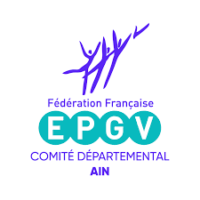
EPGV 01
Sport & SantéCréation du portail départemental d'information du CODEP EPGV 01, comité de la Fédération Française d'Éducation Physique et de Gymnastique Volontaire dans l'Ain.
Le site oriente les licenciés vers les créneaux sport-santé des clubs affiliés et informe sur les formations d'animateurs.
- Moteur de recherche des clubs : J'ai développé un annuaire avec filtre géographique par commune et par discipline.
- Inscriptions aux formations : J'ai mis en place l'espace dédié aux sessions de formation continue des encadrants.
- Prise en main du back-office : J'ai paramétré une administration simple pour que l'équipe publie ses actualités en autonomie.
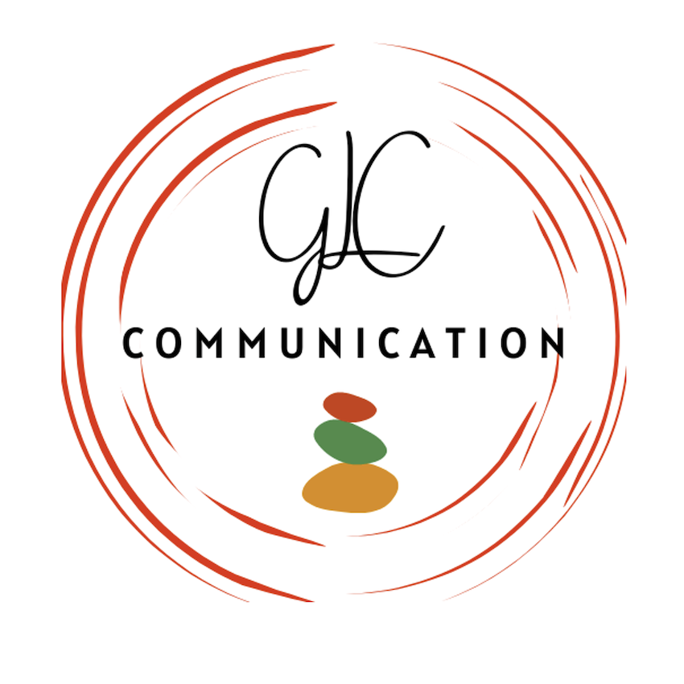
GLC Communication
Communication & MédiasDéveloppement et intégration technique du site vitrine de GLC Communication, consultante freelance en stratégie de communication, création graphique et production de podcasts dans l'Ain.
L'objectif était de traduire fidèlement son univers créatif tout en offrant un support interactif pour valoriser ses projets éditoriaux et audio.
- Intégration multimédia & audio : J'ai configuré un lecteur audio sur-mesure pour diffuser les épisodes de podcast et structuré la galerie de réalisations visuelles.
- Rigueur responsive & design : J'ai transposé ses maquettes avec précision pour assurer un rendu esthétique et fluide sur smartphone comme sur ordinateur.
- Maintenance & évolution : J'assure le suivi technique et l'accompagnement régulier pour faire évoluer ses outils selon les nouveaux formats déployés.
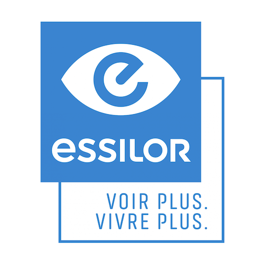
Essilor
Grand CompteParticipation au développement d'interfaces interactives sur bornes tactiles pour Essilor, fabricant de verres ophtalmiques et solutions d'optique de précision.
L'outil est conçu pour équiper les points de vente et assister les opticiens dans la démonstration des traitements de verres.
- Module interactif de simulation : J'ai participé au développement du moteur de rendu visuel comparant les antireflets, polarisations et teintes.
- Développement JavaScript : J'ai participé à la programmation d'une structure légère garantissant une réactivité instantanée sur écran tactile.
- Parcours utilisateur en magasin : J'ai participé à l'intégration de la navigation pour rendre la démonstration fluide et pédagogique pour l'opticien et le client.
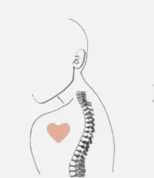
Chirolyon
Santé ChiropratiqueReprise de maintenance technique et optimisation SEO du site du cabinet de chiropraxie Chirolyon à Lyon.
L'intervention a consisté à améliorer la vitesse de chargement et à fluidifier la prise de rendez-vous en ligne.
- Optimisation de la vitesse d'affichage : J'ai nettoyé les scripts obsolètes pour accélérer le chargement sur smartphone.
- Intégration de la prise de rendez-vous : J'ai rendu visible et direct le lien vers l'agenda Doctolib des praticiens.
- Référencement local spécialisé : J'ai restructuré la sémantique des pages autour des motifs de consultation chiropratique.
Prestations & Expertises Digitales dans l'Ain 4 Domaines d'Intervention ›
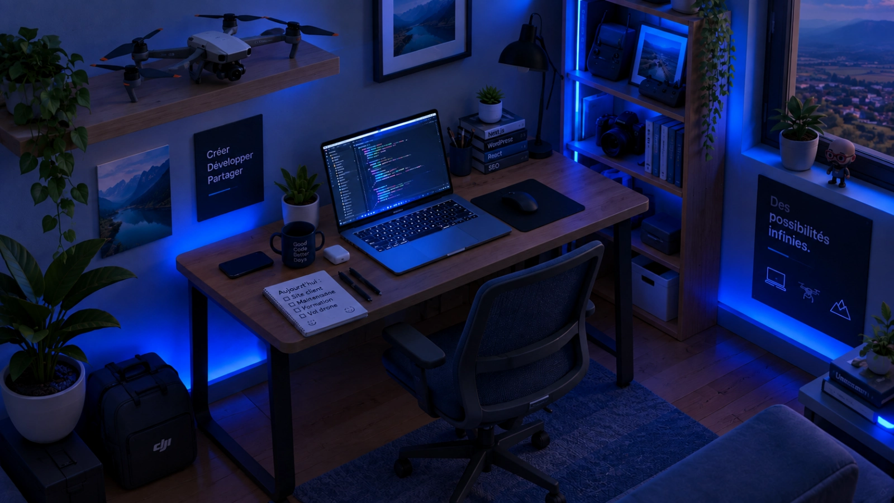
Code & No-Code
Maintenance & Sécurité
J'audite, protège et modernise vos sites existants
Visibilité Locale & IA
SEO & Visibilité Google
Je positionne votre activité en tête dans l'Ain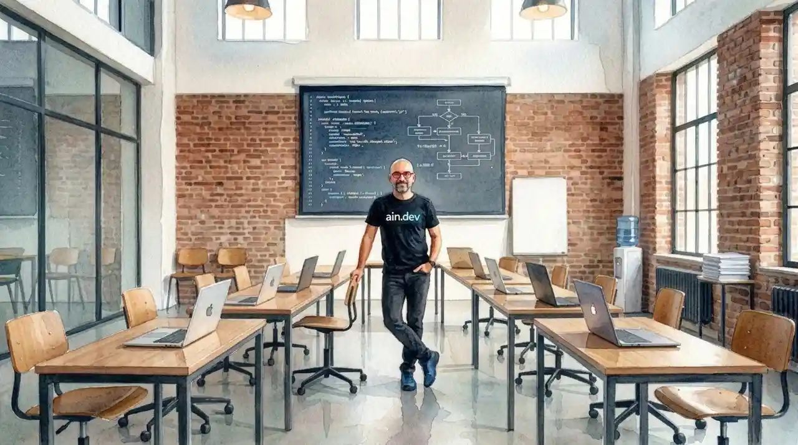
Enseignement Supérieur
Formation Digitale
Je transmets les méthodes concrètes du webPôle Drone : Prises de Vues Aériennes 4K pour vos Projets Web aindev-drone.fr ›
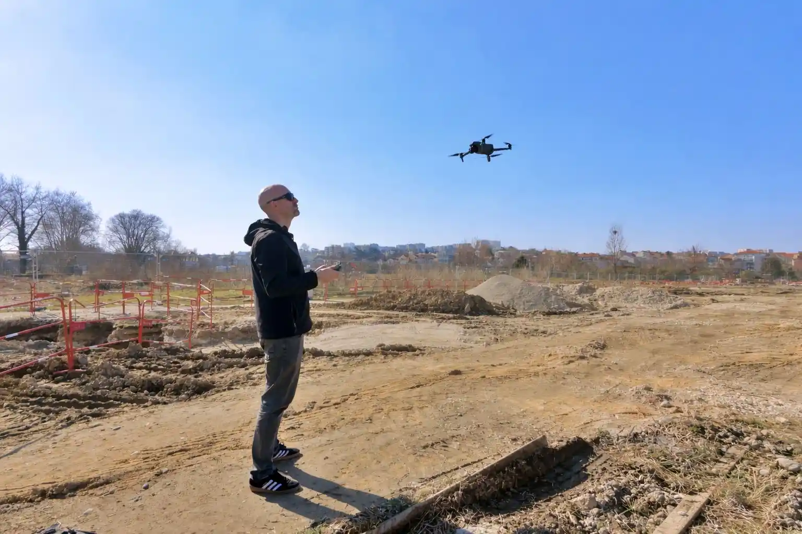
Valeur Ajoutée
Prestations Drone 4K
Je sublime vos sites par des vidéos aériennes
Galerie Vidéo · 8 Réalisations
Voir tous les épisodes
Découvrez mes tournages en vol (Pralognan, Grau-du-Roi, TGV, Barrage de Vouglans...)
Cadre Légal &
Matériel
Prises de vues 4K certifiées
- Drone DJIavec double capteur 4K HDR
- Enregistré surAlphaTango
- Assurance RC Proaérienne dédiée
Parce qu'ils en parlent mieux que moi (5.0 ★ · 13 avis Google vérifiés) Vos retours d'expérience ›
Avis vérifiés
5.0
★★★★★
13 avis clients
100 % de satisfaction client sur mes prestations web et drone dans l'Ain.
Consulter la fiche Google
★★★★★
« Nous avons fait appel à Aindev pour la création de notre site internet et nous en sommes entièrement satisfaits. Le travail a été réalisé avec professionnalisme... »
Audrey Vialan
Nous avons fait appel à Aindev pour la création de notre site
internet et nous en sommes entièrement satisfaits. Le travail a
été réalisé avec professionnalisme. Guillaume a fait preuve
d’une grande réactivité, tout en étant particulièrement patient
et de très bon conseil, pour pallier à notre manque de
connaissances dans le domaine et de notre emploi du temps
surchargé. Le résultat final est à la hauteur de nos attentes :
un site clair, esthétique et fonctionnel. Nous recommandons
vivement ses services !
★★★★★
« J’ai eu l’occasion de collaborer avec Guillaume sur deux sites internet et c’est un réel plaisir de travailler avec quelqu’un de professionnel et proactif... »
Jessie Leonardi
J’ai eu l’occasion de collaborer avec Guillaume sur deux sites
internet et c’est un réel plaisir de travailler avec quelqu’un
de professionnel et proactif. À l’écoute, efficace et impliqué,
il a su répondre parfaitement à nos attentes. Je recommande à
100 % !
★★★★★
« Super travail de professionnel. Merci Guillaume pour ton écoute, tes conseils et ton accompagnement sur la mise en place des outils digitaux... »
Laetitia Perrodin
Super travail de professionnel. Merci Guillaume pour ton écoute,
tes conseils et ton accompagnement sur la mise en place des
outils digitaux.
★★★★★
« Super contente de la création de la page Web de ma boutique et du résultat. Guillaume est une personne de confiance. Réactif et expert... »
Isabelle Fusaro
Super contente de la création de la page Web de ma boutique et
du résultat. Guillaume est une personne de confiance. Il a su
écouter mes besoins, s'adapter à la charte graphique existante
et bien cerner ma problématique qu'il a résolue en quelques
semaines. Réactif et expert, je recommande !
★★★★★
« Guillaume est pédagogue, il m’a aidé dans l’amélioration du référencement de mon site web avec un audit qualitatif... »
Julien Mardon
Guillaume est pédagogue, il m’a aidé dans l’amélioration du
référencement de mon site web, avec un audit qualitatif évoquant
des bonnes pistes d’amélioration à mettre en action. Je le
recommande vivement.
★★★★★
« Guillaume nous a accompagnés sur la réalisation de notre site. Il a su capter notre besoin et y a parfaitement répondu... »
Clinic Armes
Guillaume nous a accompagnés sur la réalisation de notre site.
Il a su capter notre besoin et y a parfaitement répondu. Nous
sommes très satisfaits de sa prestation.
★★★★★
« Guillaume a réalisé notre site internet et nous sommes très satisfaits du résultat. Il a été très disponible... »
CODEP EPGV 01
Guillaume a réalisé notre site internet et nous sommes très
satisfaits du résultat. Il a été très disponible et nous a livré
notre site internet rapidement.
★★★★★
« Je remercie chaleureusement Guillaume pour son intervention auprès des entrepreneurs de la CAE ESS’Ain... »
Jérémy Mardon
Je remercie chaleureusement Guillaume Gemelas pour son
intervention auprès des entrepreneur.e.s de la CAE ESS’Ain. Il a
su transmettre avec clarté et pédagogie des conseils précieux
pour créer un site web. Je le recommande vivement pour des
formations sur ce sujet !
★★★★★
« ESS’Ain dispose aujourd’hui d’un site web moderne, fluide et intuitif. Son écoute, sa réactivité et son souci du détail... »
ESS’Ain
ESS’Ain dispose aujourd’hui d’un site web moderne, fluide et
intuitif. Son écoute, sa réactivité et son souci du détail ont
permis de créer une plate-forme claire, accessible et en
parfaite adéquation avec l’identité de notre CAE. Un grand merci
pour cette réalisation !
★★★★★
« Guillaume a été très à l'écoute pour concevoir mon site web. De bon conseil, explications claires sans jargon... »
GLC Communication
Guillaume a été très à l'écoute pour concevoir mon site web. De
bon conseil, il donne des explications claires sans jargon
technique, il est très réactif pour les mises à jour et les
évolutions. Mon site est entre de bonnes mains !
★★★★★
« Nous avons fait confiance à Guillaume pour la refonte complète de notre site : Les Meubles Mailland... »
Caroline Mailland
Nous avons fait confiance à Guillaume pour la refonte complète
de notre site "Les Meubles Mailland" et nous sommes plus que
ravis du résultat. Il est de bon conseil, réactif et à l'écoute.
Et surtout un vrai suivi durable sans maintenance mensuelle
exorbitante !
★★★★★
« J’ai fait appel à Guillaume pour transformer mon site basique en un site professionnel avec boutique... »
Nathalie Robez-Masson
J’ai fait appel à Guillaume pour transformer mon site internet
basique en un site plus professionnel, avec une boutique. Au
final, je me retrouve avec un site bien au-delà de mes
espérances et je lui confie ma maintenance les yeux fermés.
Quelqu'un de très fiable !
★★★★★
« Guillaume a développé une application web de relevés sur site sur-mesure pour KODAMA... »
Coralie Peugeot (Kodama)
Guillaume a développé une application web de relevés sur site
sur-mesure pour KODAMA. Je l'utilise sur tablette Android. Il a
su adapter l'interface à nos contraintes de terrain et cet outil
nous simplifie grandement la vie !